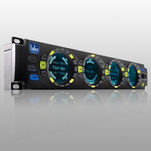

On the bench is the processor that started all this: a Dolby Lake unit with its brick-wall FIR filters. Hearing what it did to the top end was the moment FIR went from a datasheet concept to something worth chasing.
Part 2
At different places in this blog you can find information on how to set up your sound system so that it behaves as an overall all-pass filter, using conventional IIR filters or even plain old analogue filters if the components don't have a delay offset that needs to be dealt with.
Before measurement was affordable
Long, long ago, when I got my first DSP somewhere at the beginning of the '90s, I had to do system setup by ear. Measurement systems did exist — Meyer SIM — but they were simply not affordable. In those days I ran components full range and set delay by ear. It is simple: use common sense to get in the ballpark, then tweak until audio nirvana.
Next you set the crossover as dictated by the textbooks, and there goes your audio nirvana out of the window. We quickly realised you need a way of phase alignment too, to get your filtering correct.
All rather common these days, but that sense of audio nirvana never really happened in those filtered systems. And phase by itself is inaudible, so all the big names say... Stubborn as we are, we kept searching, using weak 6 dB slopes and coaxial sources.
Then, at some point, that 'new thing' FIR filtering entered our industry in the form of the brick-wall filters in the Dolby Lake processor (2004). That was eye-opening, most certainly once we realised you could also develop your own filters and not use those dreaded brick-wall filters, because they sound horrible.


Unfortunately my business was too small to get access to load custom FIR into a Dolby Lake. So the quest for a platform with custom FIR started.
How FIR filtering works
First, let's explain how FIR filtering works. In fact it is a very simple operation once you are in the digital domain.
Imagine a chunk of sampled data over time, maybe from a temperature sensor. If you would like to know the average over a certain period, you could add, say, 10 samples and divide by 10. Or, in other words, multiply those 10 samples by 0.1 and add the results to the running output value. Keep doing this over and over.
This is called a moving average filter, and it is a very crude high-cut FIR filter. The number of 'taps' in the above filter is 10, and the filter 'kernel' is an array with 10 positions, each with a value of 0.1. You can imagine those kernels being more elaborate, right?
With the same mathematics used in the measuring setup described in another post, you can derive those filter kernels: the Fourier Transform. Just use an iFFT to calculate the impulse response from a desired frequency response. Using an impulse response as a filter kernel is also called convolution, which you will have heard of in reverbs, cabinet emulations and so on.
The Impulse Response of your desired Freq Response will be used as the filter kernel!
Now, how can we do that without getting familiar with MATLAB, like I had to do 20 years ago? Well: thank Thomas Drugeon for rePhase. It is a very nifty little program, around for some 10 years now, to help you develop your filter kernels. For free! (But do donate some if you like it!!)
Linear phase is not a synonym for FIR
To round it up: FIR filtering is about using an impulse response derived from your desired frequency response. That by itself doesn't mean all FIR filters are linear phase. A lot of people in our industry use FIR as a synonym for linear phase — meaning no impact on phase — and start talking about the 'latency' of these filters. This concept is both limited and wrong.
Let me explain in simple terms. To make a linear-phase filter, you start by taking the impulse response of a conventional filter as described above. It will have its associated phase response. Next, make a copy, reverse all the coefficients and glue this to the original IR. The filter kernel is now totally symmetric around the middle coefficient and, as such, will not have any impact on the phase (uhmm, well, just believe me; there's heavy math behind this).
But it will also be twice as long as would be needed for a non-linear-phase filter. So it takes some time for the signal to pass through such a filter: in fact, half the length of the filter kernel, expressed in number of taps. This will not get any faster if processors run faster, so the expression 'latency' as we use it when talking about a PC and audio processing is not correct. Let's call it filter processing delay, and understand that it depends only on the sample frequency and the number of taps used for the filter.
Taps, delay and the real world
Which is something we would have to discuss too, but you can find the background in different places. For now, understand that both sample frequency and the number of available taps determine the resolution of your FIR: the lower the frequency and the higher the Q of the filters, the more taps you will need.
In a real-world live situation there is a limit to the time difference between the moment a sound is produced and the moment that sound comes out of the speakers. From there on it's acoustic path-length differences, but we understand this intuitively, right? So you have to determine what is acceptable for your situation.
Examples? Maybe the sound coming from your main system shouldn't arrive after the backline or drum kit. In a club situation, where the levels of backline and acoustic drums are in the same order as the levels of your PA, say something like 3 metres (or 10 ms). But what about that little processed wedge next to the grand piano? (I ended up putting it on a little riser to overcome the timing issues.)
Maybe best to keep on using your ears!